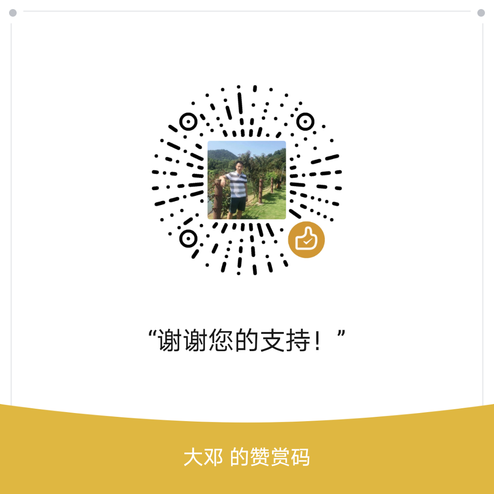

在Markdown中用mermaid语法绘制图表

Mermaid可以用文本方式绘制图表和流程图，相比Visio而言更加的轻量便捷，此外Markdown内部支持Mermaid语法，可以有效避免切换软件，让我们更加专注于内容本身。
目录
图表类型支持
-
饼形图(Pie Chart)
-
流程图（Flow Chart）
-
时序图（Sequence Diagram）
-
状态图(State Diagram)
-
甘特图（Gantt Diagram）
-
类图(class Diagram)
-
等等
饼形图
饼形图是我们经常用到的图表，在mermaid中最简单，基本上一看就会
pie title Pets adopted by volunteers "Dogs" : 386 "Cats" : 85 "Rats" : 15代码
```mermaid pie title Pets adopted by volunteers "Dogs" : 386 "Cats" : 85 "Rats" : 15 ```用到的关键词
关键词 功能 pie 定义饼形图 title 标题
流程图
graph TD
A-->B
A-->C
B-->D
C-->D
该流程图就是用下方的代码再markdown中实现的
```mermaid
graph RL;
A-->B;
A-->C;
B-->D;
C-->D;
```
关键词解读
| 关键词 | 功能 |
|---|---|
| graph | 定义流程图 |
| TD | 流程图方向。mermai的方位还有T、D、L、 R，分别代表上、下、左、右。两个方位组合成一个流动方向。本案例是从上到下，即TD |
--> |
有向箭头 |
节点还可以用:::调用修饰函数，如下
graph LR
A:::someclass --> B
classDef someclass fill:#f96;
```mermaid
graph LR
A:::someclass --> B
classDef someclass fill:#f96;
```
时序图
时序图用于描述对象之间的传递消息的时间顺序, 即用例中的行为顺序.
sequenceDiagram
participant Alice
participant Bob
participant John
Alice->>John: Hello John, how are you?
loop Healthcheck
John->>John: Fight against hypochondria
end
Note right of John: Rational thoughts <br/>prevail!
John-->>Alice: Great!
John->>Bob: How about you?
Bob-->>John: Jolly good!
顺序图稍微复杂了一丢丢，代码如下
```mermaid
sequenceDiagram
participant Alice
participant Bob
participant John
Alice->>John: Hello John, how are you?
loop Healthcheck
John->>John: Fight against hypochondria
end
Note right of John: Rational thoughts <br/>prevail!
John-->>Alice: Great!
John->>Bob: How about you?
Bob-->>John: Jolly good!
```
用到的关键词
| 关键词 | 功能 |
|---|---|
| sequenceDiagram | 定义顺序表 |
| participant | 定义图中的节点 |
| loop 、end | 循环体代码块，以loop开头，end结束； |
| Note | 提示框 |
right of |
方位关键词 |
->> |
实线箭头连接线 |
-->> |
虚线箭头 |
状态图
通过建立对象的生存周期模型来描述对象随时间变化的动态行为
stateDiagram
Start --> First
First --> Second
First --> Third
Second --> End
Third --> End
state First {
[*] --> fir
fir --> [*]
}
state Second {
[*] --> sec
sec --> [*]
}
state Third {}
代码
```mermaid
stateDiagram
Start --> First
First --> Second
First --> Third
Second --> End
Third --> End
state First {
[*] --> fir
fir --> [*]
}
state Second {
[*] --> sec
sec --> [*]
}
state Third {}
```
代码关键词解读
| 关键词 | 功能 |
|---|---|
| stateDiagram | 用于定义状态图 |
[*] |
实心黑点 |
--> |
有向实线 |
| state | 用于定义状态 |
我们可以看到状态state还可以定义内部的流程，如First和Second；Third没有定义内部处理过程。
甘特图
gantt
dateFormat YYYY-MM-DD
title Adding GANTT diagram to mermaid
excludes 2014-01-10
section A section
Completed task :done, des1, 2014-01-06,2014-01-08
Active task :active, des2, 2014-01-09, 3d
Future task : des3, after des2, 5d
Future task2 : des4, after des3, 5d
代码如下
```mermaid
gantt
dateFormat YYYY-MM-DD
title Adding GANTT diagram to mermaid
excludes weekdays 2014-01-10
section A section
Completed task :done, des1, 2014-01-06,2014-01-08
Active task :active, des2, 2014-01-09, 3d
Future task : des3, after des2, 5d
Future task2 : des4, after des3, 5d
```
用到的关键词
| 关键词 | 功能 |
|---|---|
| gantt | 定义甘特图 |
| dataFormat | 定义日期格式 |
| title | 标题 |
| excludes | 排除项目周期中的放假休息等日期 |
| section | 定义一个项目 |
:done 、 :active、: |
项目中的状态 |
| after | 紧随其后 |
class类图
面向对象的编程会经常看到类，类与类有所属关系。比如中国人是人类的一员，而人类又隶属于灵长类动物。
classDiagram
Animal <|-- Duck
Animal <|-- Fish
Animal <|-- Zebra
Animal : int age
Animal : String gender
Animal: isMammal()
Animal: mate()
class Duck{
String beakColor
swim()
quack()
}
class Fish{
int sizeInFeet
canEat()
}
class Zebra{
bool is_wild
run()
eat()
}
代码
```mermaid
classDiagram
Animal <|-- Duck
Animal <|-- Fish
Animal <|-- Zebra
Animal : int age
Animal : String gender
Animal: isMammal()
Animal: mate()
class Duck{
String beakColor
swim()
quack()
}
class Fish{
int sizeInFeet
canEat()
}
class Zebra{
bool is_wild
run()
eat()
}
```
用到的关键词
| 关键词 | 功能 |
|---|---|
| classDiagram | 定义类图 |
| <-- | 隶属于某类 |
Animal : int age |
定义Animal的年龄属性(属性没有用括号) |
Animal: isMammal() |
定义Animal的是否为哺乳动物方法(方法有括号) |
| class Duck | 定义Duck类 |
大家如果熟悉Python，就能理解类的属性和方法区别就是是否有括号。
打赏
如觉得内容很赞，可酌情打赏^_^
